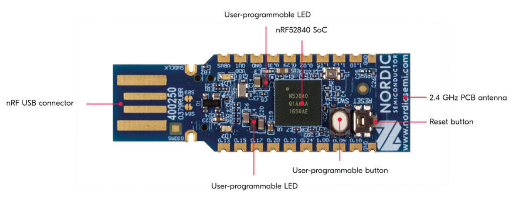
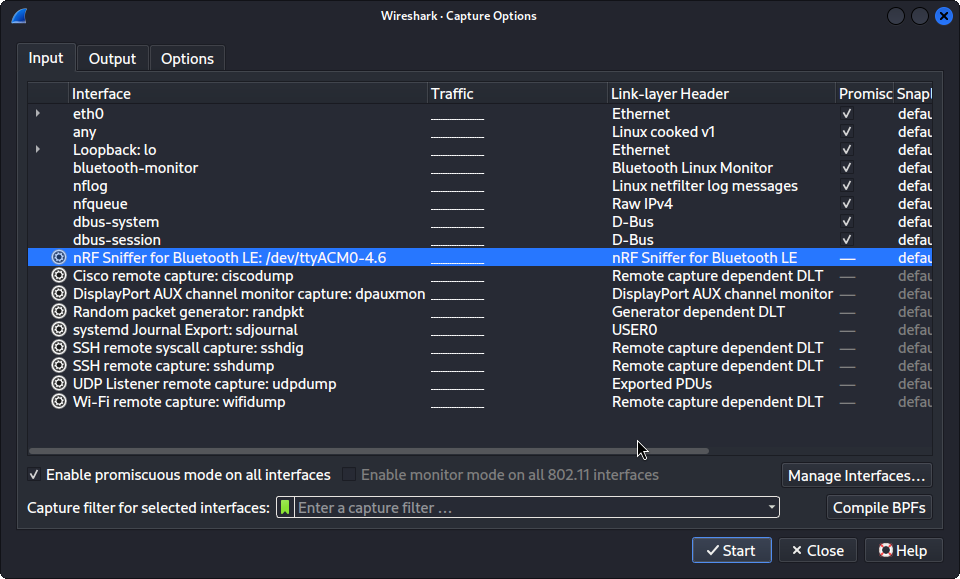
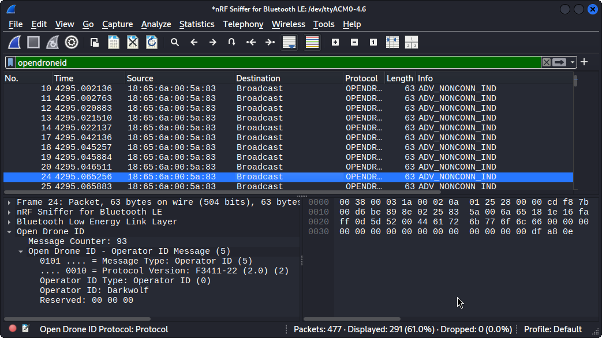
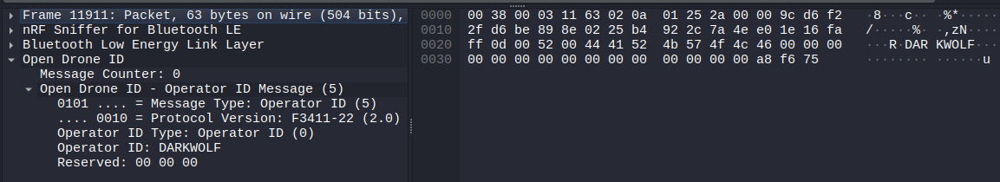

LAB30 minutes
Day 2 – RF Communications
Hack Our Drone Workshop — Dark Wolf Solutions
Kali-linux -> Settings -> USB
Insert nRF 52840 dongle in USB port on host laptop
Select the [+] icon on the right hand of the USB panel
Select ZEPHYR nRF Sniffer in the list
Select [OK] on the bottom of the USB panel

mkdir \-p \~/.local/lib/wireshark/plugins/
cd \~/.local/lib/wireshark/plugins/
git clone [https://github.com/opendroneid/wireshark-dissector](https://github.com/opendroneid/wireshark-dissector)
Start wireshark
Select Help -> About Wireshark > Plugins
Verify the entry for opendroneid-dissector.lua is present in the plugin list
Download nrfutil
Run the following commands
mkdir \-p \~/.local/lib/wireshark/extcap
./nrfutil install completion
./nrfutil install device
./nrfutil install ble-sniffer
./nrfutil ble-sniffer bootstrap
Start a BLE RemoteID device
Open Wireshark
On the Capture Splash page, select
NRF Sniffer for Bluetooth LE:/dev/ttyACMxxxx
In the filter, enter opendroneid
Verify you are receiving opendrone id packets
Stop the packet capture
Initially, the nRF5280 is delivered in DFU bootloader mode.
In VirtualBox, add the nRF 52840 in bootloader mode
To flash, you will need nrfutil setup in Kali above. Open a terminal window and run the following commands
nrfutil device list*
# * Note the serial number
# * For this example: DBE9A7B81450
# Verify bootloader mode
nrfutil ble-sniffer bootstrap
# Note the path for the blesniffer firmware for nrf52840
# /home/kali/.nrfutil/share/nrfutil-ble-sniffer/firmware/sniffer\_nrf52840dongle\_nrf52840\_4.1.1.zip
nrfutil device program --firmware /home/kali/.nrfutil/share/nrfutil-ble-sniffer/firmware/sniffer_nrf52840dongle_nrf52840_4.1.1.zip --serial-number DBE9A7B81450
# * You should see a progress bar.
# * Wait for completion
Open terminal window and type in wireshark
Double click nRF Sniffer for Bluetooth LE


In the filter, type opendroneid.message.operatorid
In the lower left window of wireshark, expand the packet fields to read the operator id
Displays the operator id for this drone is DARKWOLF

https://docs.nordicsemi.com/bundle/nrfutil/page/README.html
https://www.nordicsemi.com/Products/Development-tools/nRF-Util
“Regarding minimum RID requirements, it's "(Wi-Fi Beacon OR (BT5 AND BT4))". This is defined in the RID MOC to the Part 89 rule.”
https://github.com/opendroneid/transmitter-linux/issues/12#issuecomment-1474298494
Hcitool supported specs
sudo hcitool -i hci0 cmd 0x4 0x3
https://stackoverflow.com/questions/59237661/hcitool-lescan-fails-on-ubuntu
On BBB: 01 03 10 00 FF FE 2F FE DB FF 7B 87
Byte Bit
32 EV4 packets 4 0
33 EV5 packets 4 1
34 Reserved for future use 4 2
35 AFH capable Peripheral 4 3
36 AFH classification Peripheral 4 4
37 BR/EDR Not Supported 4 5
38 LE Supported (Controller) 4 6
39 3-slot Enhanced Data Rate ACL packets 4 7
DB \-\> 11011011